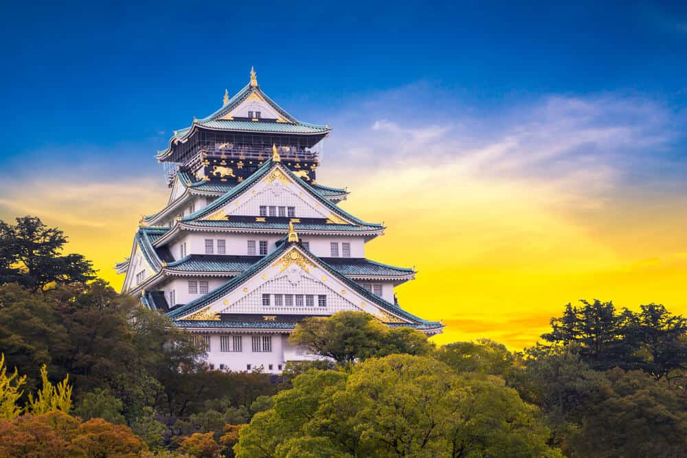

JAPAN
Japan is among the most sought-after travel destinations globally. It showcases a distinctive combination of tradition and modernity, where ancient temples and historic structures coexist alongside contemporary architectural and technological advancements. The country boasts numerous top tourist attractions, with Tokyo, Osaka, and Kyoto being three prominent cities that exemplify Japan's rich heritage and modern charm.
MOUNT FUJI

Undoubtedly Japan's most iconic landmark, the magnificent Mount Fuji (Fuji-san) also claims the title of the country's highest peak. Standing at 3,776 meters, it dominates the otherwise flat terrain to the south and east, and is visible from Tokyo, more than 100 kilometers away.
For centuries, Mount Fuji has inspired art and literature, and its cultural significance was acknowledged by UNESCO in 2013. As part of the Fuji-Hakone-Izu National Park, the mountain attracts over a million climbers each summer, many of whom make the pilgrimage to witness the sunrise from its summit.
OSAKA CASTLE
Constructed in 1586 by the renowned Japanese warrior and statesman Toyotomi Hideyoshi, Osaka Castle (Ōsaka-jō) was once the largest and most significant fortress in Japan. Although it has been destroyed and rebuilt multiple times, the current structure, completed in 1931, faithfully reflects the original design.
A highlight of the visit is the impressive five-story, 42-meter-high main tower. Standing on a massive 14-meter stone foundation, the tower houses numerous exhibits that recount the history of both the castle and the city. Don’t miss the top floor, which offers stunning views of Osaka, especially captivating at sunset.
The Island Shrine of Itsukushima, Miyajima

A short ferry ride from Hiroshima’s mainland brings you to Miyajima, famously known as Japan's Shrine Island. Spanning 30 square kilometers in Hiroshima Bay, Miyajima is celebrated for the Itsukushima Shrine, a Shinto temple devoted to the wind god Susanoo's daughters.
Dating back to the eighth century, most of the shrine's buildings are perched over a small bay, supported solely by pillars. At high tide, this creates a breathtaking effect, making the structures—especially the iconic Great Floating Gate (O-Torii)—appear to be floating on the water.